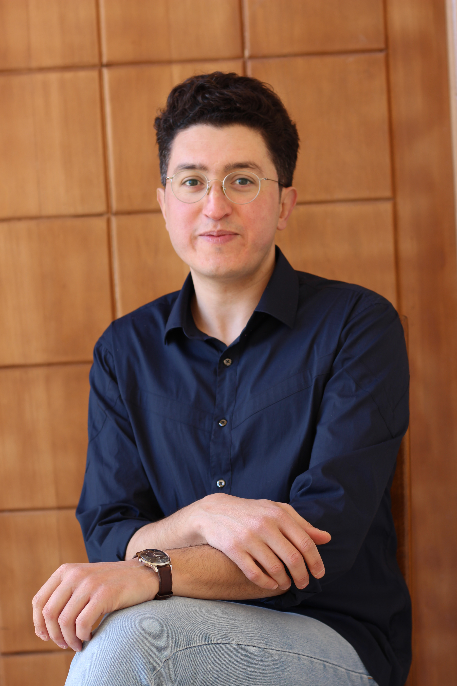

Mohamed Siala
I am an Associate Professor in Computer Science at
INSA Toulouse
and
LAAS-CNRS.
I conduct my research activities as a member of the
ROC research group (Operations Research, Combinatorial Optimization and Constraints) in LAAS-CNRS
.
Prior to that, I was a postdoctoral researcher at Insight, Centre for Data Analytics, University College Cork, Ireland.
I mainly work on improving general purpose combinatorial solving approaches (such as constraint programming and Boolean SATisfiability) for diverse applications of artificial intelligence (AI). My current research activities are focused on the intersection between declarative combinatorial optimisation, machine learning, and AI in general.
My PhD Thesis is available here .
My CV is available here .
I mainly work on improving general purpose combinatorial solving approaches (such as constraint programming and Boolean SATisfiability) for diverse applications of artificial intelligence (AI). My current research activities are focused on the intersection between declarative combinatorial optimisation, machine learning, and AI in general.
My PhD Thesis is available here .
My CV is available here .
 ORCID
ORCID

Latest News
June 2022
I spent an amazing month in Montréal visiting the team of
Sébastien Gambs and many other reserchers in
ETS,
UQAM,
and
Polytechnique Montréal.
During the visit I gave a seminar entiteled
Declarative Combinatorial Optimisation for Machine Learning.
The slides are available
here
May 2022
Great news! Our paper
Improving Fairness Generalization Through a Sample-Robust Optimization Method is accepted for publication in
Machine Learning
February 2022
Our paper
Leveraging Integer Linear Programming to Learn Optimal Fair Rule Lists is accepted for publication in
CPAIOR'22 ,
the 19th International Conference on the Integration of Constraint Programming, Artificial Intelligence, and Operations Research. Please have a look at the
publication page for a pre-print and the source code.
December 2021
Our paper
Optimizing Binary Decision Diagrams with MaxSAT for classification is accepted for publication in
AAAI'22 , the Thirty-Sixth AAAI Conference on Artificial Intelligence.
July 2021
Check out our Python library, FairCORELS, for learning fair and certifiably optimal rule lists.
This work is published in our paper "FairCORELS, an Open-Source Library for Learning Fair Rule Lists" in CIKM 2021, the 30th ACM International Conference on Information and Knowledge Management!
As usual, the source code and a preprint are available here
As usual, the source code and a preprint are available here
September 2020
Our Constraint Programming solver Mistral-2.0 won two bronze medals for the
MiniZinc Challenge 2020 (free and parallel track).
This is thanks to the Explanation-based weighted degree heuristic that we published in CPAIOR 2017.
A preprint is available here
September 2020
I'm a co-chair of the CPAIOR Master class 2020.
The theme of the master class is "Recent Advances in Optimisation Paradigms and Solving Technology".
You can watch the talks in youtube here.
June 2020
Our paper
Towards Formal Fairness in Machine Learning is accepted for publication in
CP 2020,
the 26th International Conference on Principles and Practice of Constraint Programming.
April 2020
Our paper
Learning Optimal Decision Trees with MaxSAT and its Integration in AdaBoost is accepted for publication in
IJCAI-PRICAI 2020,
the 29th International Joint Conference on Artificial Intelligence and the 17th Pacific Rim International Conference on Artificial Intelligence.
February 2020
I gave a seminar at the Department of Philosophy, UCC, Ireland entitled :
"Computational Thinking and AI for Philosophers".
September 2019
I'm a Distinguished Program Committee for
IJCAI 2019,
the 28th International Joint Conference on Artificial Intelligence. !